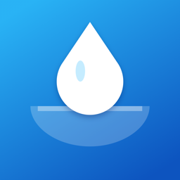

Privacy policy
Lacus Water · Effective November 12, 2026
Lacus does not collect any data. There is no account, no server, no analytics, no advertising and no tracking. The developer cannot see anything you enter.
What stays on your devices
Your logs, containers, goal and settings are stored on your iPhone. Your Apple Watch keeps a copy of today's progress, sent directly from your iPhone. Your data is included in your device backups, which are controlled by you and Apple.
Apple Health
If you turn on Apple Health sync, Lacus writes the water you log to Apple Health and reads your most recent weight to recommend a goal. Health data is used only on your device. It is never sent to the developer or anyone else, never used for advertising, and never stored in iCloud by Lacus. You can turn this off at any time in Lacus or in the Health app.
Notifications
Reminders are scheduled on your iPhone. Nothing is sent from a server.
Children
Lacus does not collect personal information from anyone, including children.
Changes
If this policy changes, the new version will be posted on this page with a new effective date.